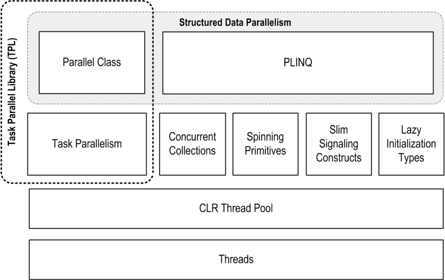

Threading in C#
Joseph Albahari
Last updated: 2011-4-27
Translations:
Chinese
| Czech
| Persian
| Russian
| Japanese
Download PDF
Part 5: Parallel Programming
Acknowledgements
Huge thanks to Stephen Toub, Jon Skeet and Mitch Wheat for their feedback
— particularly Stephen Toub whose input shaped the entire threading article and the
concurrency chapters in C# 4.0 in a Nutshell.
In this section, we cover the multithreading APIs new to
Framework 4.0 for leveraging multicore processors:
These APIs are collectively known (loosely) as PFX
(Parallel Framework). The Parallel
class together with the task parallelism
constructs is called the Task Parallel Library
or TPL.
Framework 4.0 also adds a number of lower-level threading
constructs that are aimed equally at traditional multithreading. We covered
these previously:
You’ll need to be comfortable with the fundamentals in Parts
1-4 before continuing — particularly locking and thread safety.
All the code listings in the parallel programming sections are available as interactive samples in LINQPad.
LINQPad is a C# code scratchpad and is ideal for testing code snippets without having to create a surrounding class, project or solution.
To access the samples, click Download More Samples in LINQPad's Samples tab in the bottom left, and select C# 4.0 in a Nutshell: More Chapters.
In recent times, CPU clock speeds have stagnated and
manufacturers have shifted their focus to increasing core counts. This is
problematic for us as programmers because our standard single-threaded code
will not automatically run faster as a result of those extra cores.
Leveraging multiple cores is easy for most server
applications, where each thread can independently handle a separate client
request, but is harder on the desktop — because it typically requires that you
take your computationally intensive code and do the following:
-
Partition it into small chunks.
- Execute those chunks in parallel via multithreading.
-
Collate the results as they become available, in a thread-safe
and performant manner.
Although you can do all of this with the classic
multithreading constructs, it’s awkward — particularly the steps of partitioning
and collating. A further problem is that the usual strategy of locking for thread safety
causes a lot of contention when many threads work on the same data at once.
The PFX libraries have been designed specifically to help
in these scenarios.
Programming to leverage multicores or multiple processors is
called parallel programming. This is a
subset of the broader concept of multithreading.
There are two strategies for partitioning work among threads:
data parallelism and task parallelism.
When a set of tasks must be performed on many data values,
we can parallelize by having each thread perform the (same) set of tasks on a
subset of values. This is called data parallelism
because we are partitioning the data between threads. In contrast,
with task parallelism we partition the tasks;
in other words, we have each thread perform a different task.
In general, data parallelism is easier and scales better
to highly parallel hardware, because it reduces or eliminates shared data
(thereby reducing contention and thread-safety issues). Also, data parallelism
leverages the fact that there are often more data values than discrete tasks,
increasing the parallelism potential.
Data parallelism is also conducive to structured parallelism, which means that parallel
work units start and finish in the same place in your program. In contrast, task
parallelism tends to be unstructured, meaning that parallel work units may
start and finish in places scattered across your program. Structured parallelism
is simpler and less error-prone and allows you to farm the difficult job of
partitioning and thread coordination (and even result collation) out to
libraries.
PFX comprises two layers of functionality. The higher
layer consists of two structured data parallelism APIs: PLINQ and the Parallel class. The lower layer contains
the task parallelism classes — plus a set of additional constructs to help with
parallel programming activities.

PLINQ offers the richest functionality: it automates all
the steps of parallelization — including partitioning the work into tasks,
executing those tasks on threads, and collating the results into a single
output sequence. It’s called declarative — because you simply declare
that you want to parallelize your work (which you structure as a LINQ query),
and let the Framework take care of the implementation details. In contrast, the
other approaches are imperative, in that you need to explicitly write
code to partition or collate. In the case of the Parallel
class, you must collate results yourself; with the task parallelism constructs,
you must partition the work yourself, too:
The concurrent collections and spinning primitives help
you with lower-level parallel programming activities. These are important
because PFX has been designed to work not only with today’s hardware, but also
with future generations of processors with far more cores. If you want to move
a pile of chopped wood and you have 32 workers to do the job, the biggest
challenge is moving the wood without the workers getting in each other's way.
It’s the same with dividing an algorithm among 32 cores: if ordinary locks are
used to protect common resources, the resultant blocking
may mean that only a fraction of those cores are ever actually busy at once.
The concurrent collections are tuned specifically for highly concurrent access,
with the focus on minimizing or eliminating blocking. PLINQ and the Parallel class themselves rely on the concurrent
collections and on spinning primitives for efficient management of work.
The primary use case for PFX is parallel programming:
leveraging multicore processors to speed up computationally intensive code.
A challenge in leveraging multicores is Amdahl's law,
which states that the maximum performance improvement from parallelization is
governed by the portion of the code that must execute sequentially. For
instance, if only two-thirds of an algorithm’s execution time is
parallelizable, you can never exceed a threefold performance gain — even with an
infinite number of cores.
So, before proceeding, it’s worth verifying that the
bottleneck is in parallelizable code. It’s also worth considering whether your
code needs to be computationally intensive — optimization is often the
easiest and most effective approach. There’s a trade-off, though, in that some
optimization techniques can make it harder to parallelize code.
The easiest gains come with what’s called embarrassingly parallel problems — where a job can
be divided easily into tasks that execute efficiently on their own (structured
parallelism is very well suited to such problems). Examples include many image
processing tasks, ray tracing, and brute force approaches in mathematics or
cryptography. An example of a nonembarrassingly parallel problem is
implementing an optimized version of the quicksort algorithm — a good result
takes some thought and may require unstructured parallelism.
PLINQ automatically parallelizes local LINQ queries. PLINQ
has the advantage of being easy to use in that it offloads the burden of both
work partitioning and result collation to the Framework.
To use PLINQ, simply call AsParallel()
on the input sequence and then continue the LINQ query as usual. The following
query calculates the prime numbers between 3 and 100,000 — making full use of all
cores on the target machine:
// Calculate prime numbers using a simple (unoptimized) algorithm.
//
// NB: All code listings in this chapter are available as interactive code snippets in LINQPad.
// To activate these samples, click Download More Samples in LINQPad's Samples tab in the
// bottom left, and select C# 4.0 in a Nutshell: More Chapters.
IEnumerable<int> numbers = Enumerable.Range (3, 100000-3);
var parallelQuery =
from n in numbers.AsParallel()
where Enumerable.Range (2, (int) Math.Sqrt (n)).All (i => n % i > 0)
select n;
int[] primes = parallelQuery.ToArray();
AsParallel is an extension
method in System.Linq.ParallelEnumerable. It wraps
the input in a sequence based on ParallelQuery<TSource>,
which causes the LINQ query operators that you subsequently call to bind to an
alternate set of extension methods defined in ParallelEnumerable.
These provide parallel implementations of each of the standard query operators.
Essentially, they work by partitioning the input sequence into chunks that
execute on different threads, collating the results back into a single output
sequence for consumption:
Calling AsSequential() unwraps
a ParallelQuery sequence so that subsequent query
operators bind to the standard query operators and execute sequentially. This
is necessary before calling methods that have side effects or are not
thread-safe.
For query operators that accept two input sequences (Join, GroupJoin, Concat, Union, Intersect, Except, and Zip), you must apply AsParallel()
to both input sequences (otherwise, an exception is thrown). You don’t,
however, need to keep applying AsParallel to a query
as it progresses, because PLINQ’s query operators output another ParallelQuery sequence. In fact, calling AsParallel again introduces inefficiency in that it forces
merging and repartitioning of the query:
mySequence.AsParallel() // Wraps sequence in ParallelQuery<int>
.Where (n => n > 100) // Outputs another ParallelQuery<int>
.AsParallel() // Unnecessary - and inefficient!
.Select (n => n * n)
Not all query operators can be effectively parallelized.
For those that cannot, PLINQ implements the
operator sequentially instead. PLINQ may also operate sequentially if it
suspects that the overhead of parallelization will actually slow a particular
query.
PLINQ is only for local collections: it doesn’t work with
LINQ to SQL or Entity Framework because in those cases the LINQ translates into
SQL which then executes on a database server. However, you can use
PLINQ to perform additional local querying on the result sets obtained from
database queries.
If a PLINQ query throws an exception, it’s rethrown as
an AggregateException whose InnerExceptions
property contains the real exception (or exceptions). See Working with AggregateException
for details.
Like ordinary LINQ queries, PLINQ queries are lazily
evaluated. This means that execution is triggered only when you begin consuming
the results — typically via a foreach loop (although
it may also be via a conversion operator such as ToArray
or an operator that returns a single element or value).
As you enumerate the results, though, execution proceeds
somewhat differently from that of an ordinary sequential query. A sequential
query is powered entirely by the consumer in a “pull” fashion: each element
from the input sequence is fetched exactly when required by the consumer. A
parallel query ordinarily uses independent threads to fetch elements from the
input sequence slightly ahead of when they’re needed by the consumer
(rather like a teleprompter for newsreaders, or an antiskip buffer in CD
players). It then processes the elements in parallel through the query chain,
holding the results in a small buffer so that they’re ready for the consumer on
demand. If the consumer pauses or breaks out of the enumeration early, the
query processor also pauses or stops so as not to waste CPU time or memory.
You can tweak PLINQ’s buffering behavior by calling WithMergeOptions after AsParallel.
The default value of AutoBuffered generally gives
the best overall results. NotBuffered disables the
buffer and is useful if you want to see results as soon as possible; FullyBuffered caches the entire result set before
presenting it to the consumer (the OrderBy and Reverse operators naturally work this way, as do the
element, aggregation, and conversion operators).
A side effect of parallelizing the query operators is that
when the results are collated, it’s not necessarily in the same order that they
were submitted, as illustrated in the previous diagram. In other words, LINQ’s
normal order-preservation guarantee for sequences no longer holds.
If you need order preservation, you can force it by
calling AsOrdered() after AsParallel():
myCollection.AsParallel().AsOrdered()...
Calling AsOrdered incurs a
performance hit with large numbers of elements because PLINQ must keep track of
each element’s original position.
You can negate the effect of AsOrdered
later in a query by calling AsUnordered: this
introduces a “random shuffle point” which allows the query to execute more
efficiently from that point on. So if you wanted to preserve input-sequence
ordering for just the first two query operators, you’d do this:
inputSequence.AsParallel().AsOrdered()
.QueryOperator1()
.QueryOperator2()
.AsUnordered() // From here on, ordering doesn’t matter
.QueryOperator3()
...
AsOrdered is not the default
because for most queries, the original input ordering doesn’t matter. In other
words, if AsOrdered was the default, you’d have to
apply AsUnordered to the majority of your parallel
queries to get the best performance, which would be burdensome.
There are currently some practical limitations on what
PLINQ can parallelize. These limitations may loosen with subsequent service
packs and Framework versions.
The following query operators prevent a query from being
parallelized, unless the source elements are in their original indexing
position:
-
Take, TakeWhile,
Skip, and SkipWhile
- The indexed versions of
Select, SelectMany, and ElementAt
Most query operators change the indexing position of
elements (including those that remove elements, such as Where).
This means that if you want to use the preceding operators, they’ll usually
need to be at the start of the query.
The following query operators are parallelizable, but use
an expensive partitioning strategy that can sometimes be slower than sequential
processing:
-
Join, GroupBy,
GroupJoin, Distinct, Union, Intersect, and Except
The Aggregate operator’s seeded
overloads in their standard incarnations are not parallelizable — PLINQ provides special overloads to deal with this.
All other operators are parallelizable, although use of
these operators doesn’t guarantee that your query will be parallelized. PLINQ
may run your query sequentially if it suspects that the overhead of
parallelization will slow down that particular query. You can override this
behavior and force parallelism by calling the following after AsParallel():
.WithExecutionMode (ParallelExecutionMode.ForceParallelism)
Suppose we want to write a spellchecker that runs quickly
with very large documents by leveraging all available cores. By formulating our
algorithm into a LINQ query, we can very easily parallelize it.
The first step is to download a dictionary of English
words into a HashSet for efficient lookup:
if (!File.Exists ("WordLookup.txt")) // Contains about 150,000 words
new WebClient().DownloadFile (
"http://www.albahari.com/ispell/allwords.txt", "WordLookup.txt");
var wordLookup = new HashSet<string> (
File.ReadAllLines ("WordLookup.txt"),
StringComparer.InvariantCultureIgnoreCase);
We’ll then use our word lookup to create a test “document”
comprising an array of a million random words. After building the array, we’ll
introduce a couple of spelling mistakes:
var random = new Random();
string[] wordList = wordLookup.ToArray();
string[] wordsToTest = Enumerable.Range (0, 1000000)
.Select (i => wordList [random.Next (0, wordList.Length)])
.ToArray();
wordsToTest [12345] = "woozsh"; // Introduce a couple
wordsToTest [23456] = "wubsie"; // of spelling mistakes.
Now we can perform our parallel spellcheck by testing wordsToTest against wordLookup.
PLINQ makes this very easy:
var query = wordsToTest
.AsParallel()
.Select ((word, index) => new IndexedWord { Word=word, Index=index })
.Where (iword => !wordLookup.Contains (iword.Word))
.OrderBy (iword => iword.Index);
query.Dump(); // Display output in LINQPad
Here's the output, as displayed in LINQPad:
| Word |
Index |
| woozsh |
12345 |
| wubsie |
23456 |
IndexedWord is a custom struct
that we define as follows:
struct IndexedWord { public string Word; public int Index; }
The wordLookup.Contains method
in the predicate gives the query some “meat” and makes it worth parallelizing.
We could simplify the query slightly by using an anonymous
type instead of the IndexedWord struct. However,
this would degrade performance because anonymous types (being classes and
therefore reference types) incur the cost of heap-based allocation and
subsequent garbage collection.
The difference might not be enough to matter with sequential
queries, but with parallel queries, favoring stack-based allocation can be
quite advantageous. This is because stack-based allocation is highly
parallelizable (as each thread has its own stack), whereas all threads must
compete for the same heap — managed by a single memory manager and garbage
collector.
Let’s extend our example by parallelizing the creation of
the random test-word list itself. We structured this as a LINQ query, so it
should be easy. Here’s the sequential version:
string[] wordsToTest = Enumerable.Range (0, 1000000)
.Select (i => wordList [random.Next (0, wordList.Length)])
.ToArray();
Unfortunately, the call to random.Next
is not thread-safe, so it’s not as simple as inserting AsParallel()
into the query. A potential solution is to write a function that locks around random.Next; however, this would limit concurrency. The
better option is to use ThreadLocal<Random> to
create a separate Random object for each thread. We
can then parallelize the query as follows:
var localRandom = new ThreadLocal<Random>
( () => new Random (Guid.NewGuid().GetHashCode()) );
string[] wordsToTest = Enumerable.Range (0, 1000000).AsParallel()
.Select (i => wordList [localRandom.Value.Next (0, wordList.Length)])
.ToArray();
In our factory function for instantiating a Random object, we pass in a Guid’s
hashcode to ensure that if two Random objects are
created within a short period of time, they’ll yield different random number
sequences.
Because PLINQ runs your query on parallel threads, you
must be careful not to perform thread-unsafe operations. In particular, writing
to variables is side-effecting and therefore thread-unsafe:
// The following query multiplies each element by its position.
// Given an input of Enumerable.Range(0,999), it should output squares.
int i = 0;
var query = from n in Enumerable.Range(0,999).AsParallel() select n * i++;
We could make incrementing i
thread-safe by using locks or Interlocked,
but the problem would still remain that i won’t
necessarily correspond to the position of the input element. And adding AsOrdered to the query
wouldn’t fix the latter problem, because AsOrdered
ensures only that the elements are output in an order consistent with them
having been processed sequentially — it doesn’t actually process them
sequentially.
Instead, this query should be rewritten to use the indexed
version of Select:
var query = Enumerable.Range(0,999).AsParallel().Select ((n, i) => n * i);
For best performance, any methods called from query
operators should be thread-safe by virtue of not writing to fields or
properties (non-side-effecting, or functionally
pure). If they’re thread-safe by virtue of locking, the query’s parallelism
potential will be limited — by the duration of the lock divided by the total time
spent in that function.
Sometimes a query is long-running not because it’s
CPU-intensive, but because it waits on something — such as a web page to
download or some hardware to respond. PLINQ can effectively parallelize such
queries, providing that you hint it by calling WithDegreeOfParallelism
after AsParallel. For instance, suppose we want to
ping six websites simultaneously. Rather than using clumsy asynchronous delegates or manually spinning
up six threads, we can accomplish this effortlessly with a PLINQ query:
from site in new[]
{
"www.albahari.com",
"www.linqpad.net",
"www.oreilly.com",
"www.takeonit.com",
"stackoverflow.com",
"www.rebeccarey.com"
}
.AsParallel().WithDegreeOfParallelism(6)
let p = new Ping().Send (site)
select new
{
site,
Result = p.Status,
Time = p.RoundtripTime
}
WithDegreeOfParallelism forces
PLINQ to run the specified number of tasks simultaneously. This is necessary
when calling blocking
functions such as Ping.Send because PLINQ otherwise
assumes that the query is CPU-intensive and allocates tasks accordingly. On a
two-core machine, for instance, PLINQ may default to running only two tasks at
once, which is clearly undesirable in this situation.
PLINQ typically serves each task with a thread, subject to
allocation by the thread pool. You can
accelerate the initial ramping up of threads by calling ThreadPool.SetMinThreads.
To give another example, suppose we were writing a
surveillance system and wanted to repeatedly combine images from four security
cameras into a single composite image for display on a CCTV. We’ll represent a
camera with the following class:
class Camera
{
public readonly int CameraID;
public Camera (int cameraID) { CameraID = cameraID; }
// Get image from camera: return a simple string rather than an image
public string GetNextFrame()
{
Thread.Sleep (123); // Simulate time taken to get snapshot
return "Frame from camera " + CameraID;
}
}
To obtain a composite image, we must call GetNextFrame on each of four camera objects. Assuming the
operation is I/O-bound, we can quadruple our frame rate with
parallelization — even on a single-core machine. PLINQ makes this possible with
minimal programming effort:
Camera[] cameras = Enumerable.Range (0, 4) // Create 4 camera objects.
.Select (i => new Camera (i))
.ToArray();
while (true)
{
string[] data = cameras
.AsParallel().AsOrdered().WithDegreeOfParallelism (4)
.Select (c => c.GetNextFrame()).ToArray();
Console.WriteLine (string.Join (", ", data)); // Display data...
}
GetNextFrame is a blocking method, so we used WithDegreeOfParallelism
to get the desired concurrency. In our example, the blocking happens when we
call Sleep; in real life it would block because
fetching an image from a camera is I/O- rather than CPU-intensive.
Calling AsOrdered ensures the
images are displayed in a consistent order. Because there are only four
elements in the sequence, this would have a negligible effect on performance.
Changing the degree of parallelism
You can call WithDegreeOfParallelism
only once within a PLINQ query. If you need to call it again, you must force
merging and repartitioning of the query by calling AsParallel()
again within the query:
"The Quick Brown Fox"
.AsParallel().WithDegreeOfParallelism (2)
.Where (c => !char.IsWhiteSpace (c))
.AsParallel().WithDegreeOfParallelism (3) // Forces Merge + Partition
.Select (c => char.ToUpper (c))
Canceling a PLINQ query whose results you’re consuming in
a foreach loop is easy: simply break out of the foreach and the query will be automatically canceled as
the enumerator is implicitly disposed.
For a query that terminates with a conversion, element, or
aggregation operator, you can cancel it from another thread via a cancellation token. To insert a token, call WithCancellation after calling AsParallel,
passing in the Token property of a CancellationTokenSource object. Another thread can then
call Cancel on the token source, which throws an OperationCanceledException on the query’s consumer:
IEnumerable<int> million = Enumerable.Range (3, 1000000);
var cancelSource = new CancellationTokenSource();
var primeNumberQuery =
from n in million.AsParallel().WithCancellation (cancelSource.Token)
where Enumerable.Range (2, (int) Math.Sqrt (n)).All (i => n % i > 0)
select n;
new Thread (() => {
Thread.Sleep (100); // Cancel query after
cancelSource.Cancel(); // 100 milliseconds.
}
).Start();
try
{
// Start query running:
int[] primes = primeNumberQuery.ToArray();
// We'll never get here because the other thread will cancel us.
}
catch (OperationCanceledException)
{
Console.WriteLine ("Query canceled");
}
PLINQ doesn’t preemptively abort threads, because of the danger of doing so. Instead, upon cancellation it
waits for each worker thread to finish with its current element before ending
the query. This means that any external methods that the query calls will run
to completion.
One of PLINQ’s advantages is that it conveniently collates
the results from parallelized work into a single output sequence. Sometimes,
though, all that you end up doing with that sequence is running some function
once over each element:
foreach (int n in parallelQuery)
DoSomething (n);
If this is the case — and you don’t care about the order in
which the elements are processed — you can improve efficiency with PLINQ’s ForAll method.
The ForAll method runs a
delegate over every output element of a ParallelQuery.
It hooks right into PLINQ’s internals, bypassing the steps of collating and
enumerating the results. To give a trivial example:
"abcdef".AsParallel().Select (c => char.ToUpper(c)).ForAll (Console.Write);
Collating and enumerating results is not a massively expensive
operation, so the ForAll optimization yields the
greatest gains when there are large numbers of quickly executing input
elements.
Input-side optimization
PLINQ has three partitioning strategies for assigning input
elements to threads:
| Strategy |
Element allocation |
Relative performance |
| Chunk partitioning |
Dynamic |
Average |
| Range partitioning |
Static |
Poor to excellent |
| Hash partitioning |
Static |
Poor |
For query operators that require comparing elements (GroupBy, Join, GroupJoin, Intersect, Except, Union, and Distinct), you have no choice: PLINQ always uses hash partitioning. Hash partitioning is relatively
inefficient in that it must precalculate the hashcode of every element (so that
elements with identical hashcodes can be processed on the same thread). If you
find this too slow, your only option is to call AsSequential
to disable parallelization.
For all other query operators, you have a choice as to
whether to use range or chunk partitioning. By default:
- If the input sequence is indexable
(if it’s an array or implements
IList<T>),
PLINQ chooses range partitioning.
- Otherwise, PLINQ chooses chunk partitioning.
In a nutshell, range partitioning is faster with long
sequences for which every element takes a similar amount of CPU time to process.
Otherwise, chunk partitioning is usually faster.
To force range partitioning:
- If the query starts with
Enumerable.Range,
replace the latter with ParallelEnumerable.Range.
- Otherwise, simply call
ToList or ToArray on the input sequence (obviously, this incurs a
performance cost in itself which you should take into account).
ParallelEnumerable.Range is
not simply a shortcut for calling Enumerable.Range(…).AsParallel(). It changes the performance of the query by
activating range partitioning.
To force chunk partitioning, wrap the input
sequence in a call to Partitioner.Create (in System.Collection.Concurrent) as follows:
int[] numbers = { 3, 4, 5, 6, 7, 8, 9 };
var parallelQuery =
Partitioner.Create (numbers, true).AsParallel()
.Where (...)
The second argument to Partitioner.Create
indicates that you want to load-balance the query, which is another
way of saying that you want chunk partitioning.
Chunk partitioning works by having each worker thread
periodically grab small “chunks” of elements from the input sequence to
process. PLINQ starts by allocating very small chunks (one or two elements at a
time), then increases the chunk size as the query progresses: this ensures that
small sequences are effectively parallelized and large sequences don’t cause
excessive round-tripping. If a worker happens to get “easy” elements (that
process quickly) it will end up getting more chunks. This system keeps every
thread equally busy (and the cores “balanced”); the only downside is that
fetching elements from the shared input sequence requires synchronization
(typically an exclusive lock) — and this can result in
some overhead and contention.
Range partitioning bypasses the normal input-side
enumeration and preallocates an equal number of elements to each worker, avoiding
contention on the input sequence. But if some threads happen to get easy
elements and finish early, they sit idle while the remaining threads continue
working. Our earlier prime number calculator might perform poorly with range
partitioning. An example of when range partitioning would do well is in
calculating the sum of the square roots of the first 10 million integers:
ParallelEnumerable.Range (1, 10000000).Sum (i => Math.Sqrt (i))
ParallelEnumerable.Range
returns a ParallelQuery<T>, so you don’t need
to subsequently call AsParallel.
Range partitioning doesn’t necessarily allocate element ranges
in contiguous blocks — it might instead choose a “striping” strategy.
For instance, if there are two workers, one worker might process odd-numbered
elements while the other processes even-numbered elements. The TakeWhile operator is almost certain to trigger a striping
strategy to avoid unnecessarily processing elements later in the sequence.
PLINQ parallelizes the Sum, Average, Min, and Max operators efficiently without additional intervention.
The Aggregate operator, though, presents special
challenges for PLINQ.
If you’re unfamiliar with this operator, you can think of Aggregate as a generalized version of Sum,
Average, Min, and Max — in other words, an operator that lets you plug in a
custom accumulation algorithm for implementing unusual aggregations. The
following demonstrates how Aggregate can do the work
of Sum:
int[] numbers = { 2, 3, 4 };
int sum = numbers.Aggregate (0, (total, n) => total + n); // 9
The first argument to Aggregate
is the seed, from which accumulation starts. The
second argument is an expression to update the accumulated value, given a fresh
element. You can optionally supply a third argument to project the final result
value from the accumulated value.
Most problems for which Aggregate
has been designed can be solved as easily with a foreach
loop — and with more familiar syntax. The advantage of Aggregate
is precisely that large or complex aggregations can be parallelized
declaratively with PLINQ.
Unseeded aggregations
You can omit the seed value when calling Aggregate, in which case the first element becomes the implicit
seed, and aggregation proceeds from the second element. Here’s the preceding
example, unseeded:
int[] numbers = { 1, 2, 3 };
int sum = numbers.Aggregate ((total, n) => total + n); // 6
This gives the same result as before, but we’re actually
doing a different calculation. Before, we were calculating 0+1+2+3;
now we’re calculating 1+2+3. We can better illustrate the difference by
multiplying instead of adding:
int[] numbers = { 1, 2, 3 };
int x = numbers.Aggregate (0, (prod, n) => prod * n); // 0*1*2*3 = 0
int y = numbers.Aggregate ( (prod, n) => prod * n); // 1*2*3 = 6
As we’ll see shortly, unseeded aggregations have the
advantage of being parallelizable without requiring the use of special
overloads. However, there is a trap with unseeded aggregations: the unseeded aggregation
methods are intended for use with delegates that are commutative and associative.
If used otherwise, the result is either unintuitive (with ordinary
queries) or nondeterministic (in the case that you parallelize the
query with PLINQ). For example, consider the following function:
(total, n) => total + n * n
This is neither commutative nor associative. (For example,
1+2*2 != 2+1*1). Let’s see what happens when we use it to sum the square of the
numbers 2, 3, and 4:
int[] numbers = { 2, 3, 4 };
int sum = numbers.Aggregate ((total, n) => total + n * n); // 27
Instead of calculating:
2*2 + 3*3 + 4*4 // 29
it calculates:
2 + 3*3 + 4*4 // 27
We can fix this in a number of ways. First, we could
include 0 as the first element:
int[] numbers = { 0, 2, 3, 4 };
Not only is this inelegant, but it will still give
incorrect results if parallelized — because PLINQ leverages the function’s
assumed associativity by selecting multiple elements as seeds. To
illustrate, if we denote our aggregation function as follows:
f(total, n) => total + n * n
then LINQ to Objects would calculate this:
f(f(f(0, 2),3),4)
whereas PLINQ may do this:
f(f(0,2),f(3,4))
with the following result:
First partition: a = 0 + 2*2 (= 4)
Second partition: b = 3 + 4*4 (= 19)
Final result: a + b*b (= 365)
OR EVEN: b + a*a (= 35)
There are two good solutions. The first is to turn this
into a seeded aggregation — with zero as the seed. The only complication is that
with PLINQ, we’d need to use a special overload in order for the query not to
execute sequentially (as we’ll see soon).
The second solution is to restructure the query such that
the aggregation function is commutative and associative:
int sum = numbers.Select (n => n * n).Aggregate ((total, n) => total + n);
Of course, in such simple scenarios you can (and should) use
the Sum operator instead of Aggregate:
int sum = numbers.Sum (n => n * n);
You can actually go quite far just with Sum
and Average. For instance, you can use Average to calculate a root-mean-square:
Math.Sqrt (numbers.Average (n => n * n))
and even standard deviation:
double mean = numbers.Average();
double sdev = Math.Sqrt (numbers.Average (n =>
{
double dif = n - mean;
return dif * dif;
}));
Both are safe, efficient and fully parallelizable.
Parallelizing Aggregate
We just saw that for unseeded aggregations, the
supplied delegate must be associative and commutative. PLINQ will give
incorrect results if this rule is violated, because it draws multiple seeds
from the input sequence in order to aggregate several partitions of the
sequence simultaneously.
Explicitly seeded aggregations might seem like a safe
option with PLINQ, but unfortunately these ordinarily execute sequentially because
of the reliance on a single seed. To mitigate this, PLINQ provides another
overload of Aggregate that lets you specify multiple
seeds — or rather, a seed factory function. For each thread, it executes
this function to generate a separate seed, which becomes a thread-local
accumulator into which it locally aggregates elements.
You must also supply a function to indicate how to combine
the local and main accumulators. Finally, this Aggregate
overload (somewhat gratuitously) expects a delegate to perform any final
transformation on the result (you can achieve this as easily by running some
function on the result yourself afterward). So, here are the four delegates, in
the order they are passed:
-
seedFactory
- Returns a new local accumulator
-
updateAccumulatorFunc
- Aggregates an element into a local accumulator
-
combineAccumulatorFunc
- Combines a local accumulator with the main accumulator
-
resultSelector
- Applies any final transformation on the end result
In simple scenarios, you can specify a seed value
instead of a seed factory. This tactic fails when the seed is a reference type
that you wish to mutate, because the same instance will then be shared by each
thread.
To give a very simple example, the following sums the
values in a numbers array:
numbers.AsParallel().Aggregate (
() => 0, // seedFactory
(localTotal, n) => localTotal + n, // updateAccumulatorFunc
(mainTot, localTot) => mainTot + localTot, // combineAccumulatorFunc
finalResult => finalResult) // resultSelector
This example is contrived in that we could get the same
answer just as efficiently using simpler approaches (such as an unseeded
aggregate, or better, the Sum operator). To give a
more realistic example, suppose we wanted to calculate the frequency of each
letter in the English alphabet in a given string. A simple sequential solution
might look like this:
string text = "Let’s suppose this is a really long string";
var letterFrequencies = new int[26];
foreach (char c in text)
{
int index = char.ToUpper (c) - 'A';
if (index >= 0 && index <= 26) letterFrequencies [index]++;
};
An example of when the input text might be very long is in
gene sequencing. The “alphabet” would then consist of the letters a, c,
g, and t.
To parallelize this, we could replace the foreach statement with a call to Parallel.ForEach (as
we’ll cover in the following section), but this will leave us to deal with
concurrency issues on the shared array. And locking
around accessing that array would all but kill the potential for
parallelization.
Aggregate offers a tidy
solution. The accumulator, in this case, is an array just like the letterFrequencies array in our preceding example. Here’s a
sequential version using Aggregate:
int[] result =
text.Aggregate (
new int[26], // Create the "accumulator"
(letterFrequencies, c) => // Aggregate a letter into the accumulator
{
int index = char.ToUpper (c) - 'A';
if (index >= 0 && index <= 26) letterFrequencies [index]++;
return letterFrequencies;
});
And now the parallel version, using PLINQ’s special
overload:
int[] result =
text.AsParallel().Aggregate (
() => new int[26], // Create a new local accumulator
(localFrequencies, c) => // Aggregate into the local accumulator
{
int index = char.ToUpper (c) - 'A';
if (index >= 0 && index <= 26) localFrequencies [index]++;
return localFrequencies;
},
// Aggregate local->main accumulator
(mainFreq, localFreq) =>
mainFreq.Zip (localFreq, (f1, f2) => f1 + f2).ToArray(),
finalResult => finalResult // Perform any final transformation
); // on the end result.
Notice that the local accumulation function mutates
the localFrequencies array. This ability to perform
this optimization is important — and is legitimate because localFrequencies
is local to each thread.
PFX provides a basic form of structured parallelism via
three static methods in the Parallel class:
-
Parallel.Invoke
- Executes an array of delegates in parallel
-
Parallel.For
- Performs the parallel equivalent of a C#
for loop
-
Parallel.ForEach
- Performs the parallel equivalent of a C#
foreach loop
All three methods block until all work is complete. As
with PLINQ, after an unhandled exception, remaining
workers are stopped after their current iteration and the exception (or exceptions)
are thrown back to the caller — wrapped in an AggregateException.
Parallel.Invoke executes an
array of Action delegates in parallel, and then
waits for them to complete. The simplest version of the method is defined as
follows:
public static void Invoke (params Action[] actions);
Here’s how we can use Parallel.Invoke
to download two web pages at once:
Parallel.Invoke (
() => new WebClient().DownloadFile ("http://www.linqpad.net", "lp.html"),
() => new WebClient().DownloadFile ("http://www.jaoo.dk", "jaoo.html"));
On the surface, this seems like a convenient shortcut for
creating and waiting on two Task
objects (or asynchronous delegates). But
there’s an important difference: Parallel.Invoke
still works efficiently if you pass in an array of a million delegates. This is
because it partitions large numbers of elements into batches which it
assigns to a handful of underlying Tasks — rather than
creating a separate Task for each delegate.
As with all of Parallel’s
methods, you’re on your own when it comes to collating the results. This means
you need to keep thread safety in mind. The
following, for instance, is thread-unsafe:
var data = new List<string>();
Parallel.Invoke (
() => data.Add (new WebClient().DownloadString ("http://www.foo.com")),
() => data.Add (new WebClient().DownloadString ("http://www.far.com")));
Locking around adding to the list
would resolve this, although locking would create a bottleneck if you had a
much larger array of quickly executing delegates. A better solution is to use
a thread-safe collection such as ConcurrentBag would be ideal in this case.
Parallel.Invoke is also
overloaded to accept a ParallelOptions object:
public static void Invoke (ParallelOptions options,
params Action[] actions);
With ParallelOptions, you can
insert a cancellation token, limit the
maximum concurrency, and specify a custom task
scheduler. A cancellation token is relevant when you’re executing (roughly)
more tasks than you have cores: upon cancellation, any unstarted delegates will
be abandoned. Any already-executing delegates will, however, continue to
completion. See Cancellation for an example of how
to use cancellation tokens.
Parallel.For and Parallel.ForEach perform the equivalent of a C# for and foreach loop, but with
each iteration executing in parallel instead of sequentially. Here are their
(simplest) signatures:
public static ParallelLoopResult For (
int fromInclusive, int toExclusive, Action<int> body)
public static ParallelLoopResult ForEach<TSource> (
IEnumerable<TSource> source, Action<TSource> body)
The following sequential for
loop:
for (int i = 0; i < 100; i++)
Foo (i);
is parallelized like this:
Parallel.For (0, 100, i => Foo (i));
or more simply:
Parallel.For (0, 100, Foo);
And the following sequential foreach:
foreach (char c in "Hello, world")
Foo (c);
is parallelized like this:
Parallel.ForEach ("Hello, world", Foo);
To give a practical example, if we import the System.Security.Cryptography namespace, we can generate
six public/private key-pair strings in parallel as follows:
var keyPairs = new string[6];
Parallel.For (0, keyPairs.Length,
i => keyPairs[i] = RSA.Create().ToXmlString (true));
As with Parallel.Invoke,
we can feed Parallel.For and Parallel.ForEach
a large number of work items and they’ll be efficiently partitioned onto a few
tasks.
The latter query could also be done with PLINQ:
string[] keyPairs =
ParallelEnumerable.Range (0, 6)
.Select (i => RSA.Create().ToXmlString (true))
.ToArray();
Outer versus inner loops
Parallel.For and Parallel.ForEach usually work best on outer rather than
inner loops. This is because with the former, you’re offering larger chunks of
work to parallelize, diluting the management overhead. Parallelizing both inner
and outer loops is usually unnecessary. In the following example, we’d
typically need more than 100 cores to benefit from the inner parallelization:
Parallel.For (0, 100, i =>
{
Parallel.For (0, 50, j => Foo (i, j)); // Sequential would be better
}); // for the inner loop.
Indexed Parallel.ForEach
Sometimes it’s useful to know the loop iteration index.
With a sequential foreach, it’s easy:
int i = 0;
foreach (char c in "Hello, world")
Console.WriteLine (c.ToString() + i++);
Incrementing a shared variable, however, is not
thread-safe in a parallel context. You must instead use the following version
of ForEach:
public static ParallelLoopResult ForEach<TSource> (
IEnumerable<TSource> source, Action<TSource,ParallelLoopState,long> body)
We’ll ignore ParallelLoopState
(which we’ll cover in the following section). For now, we’re interested in Action’s third type parameter of type long,
which indicates the loop index:
Parallel.ForEach ("Hello, world", (c, state, i) =>
{
Console.WriteLine (c.ToString() + i);
});
To put this into a practical context, we’ll revisit the spellchecker that we wrote with PLINQ.
The following code loads up a dictionary along with an array of a million words
to test:
if (!File.Exists ("WordLookup.txt")) // Contains about 150,000 words
new WebClient().DownloadFile (
"http://www.albahari.com/ispell/allwords.txt", "WordLookup.txt");
var wordLookup = new HashSet<string> (
File.ReadAllLines ("WordLookup.txt"),
StringComparer.InvariantCultureIgnoreCase);
var random = new Random();
string[] wordList = wordLookup.ToArray();
string[] wordsToTest = Enumerable.Range (0, 1000000)
.Select (i => wordList [random.Next (0, wordList.Length)])
.ToArray();
wordsToTest [12345] = "woozsh"; // Introduce a couple
wordsToTest [23456] = "wubsie"; // of spelling mistakes.
We can perform the spellcheck on our wordsToTest
array using the indexed version of Parallel.ForEach
as follows:
var misspellings = new ConcurrentBag<Tuple<int,string>>();
Parallel.ForEach (wordsToTest, (word, state, i) =>
{
if (!wordLookup.Contains (word))
misspellings.Add (Tuple.Create ((int) i, word));
});
Notice that we had to collate the results into a
thread-safe collection: having to do this is the disadvantage when compared to
using PLINQ. The advantage over PLINQ is that we avoid the cost of applying an
indexed Select query operator — which is less
efficient than an indexed ForEach.
ParallelLoopState: Breaking early out of loops
Because the loop body in a parallel For
or ForEach is a delegate, you can’t exit the loop
early with a break statement. Instead, you must call
Break or Stop on a ParallelLoopState object:
public class ParallelLoopState
{
public void Break();
public void Stop();
public bool IsExceptional { get; }
public bool IsStopped { get; }
public long? LowestBreakIteration { get; }
public bool ShouldExitCurrentIteration { get; }
}
Obtaining a ParallelLoopState
is easy: all versions of For and ForEach are overloaded to accept loop bodies of type Action<TSource,ParallelLoopState>. So, to
parallelize this:
foreach (char c in "Hello, world")
if (c == ',')
break;
else
Console.Write (c);
do this:
Parallel.ForEach ("Hello, world", (c, loopState) =>
{
if (c == ',')
loopState.Break();
else
Console.Write (c);
});
Hlloe
You can see from the output that loop bodies may complete
in a random order. Aside from this difference, calling Break
yields at least the same elements as executing the loop sequentially:
this example will always output at least the letters H, e,
l, l, and o in some order. In contrast, calling Stop instead of Break forces
all threads to finish right after their current iteration. In our example,
calling Stop could give us a subset of the letters H,
e, l, l, and o if another thread was
lagging behind. Calling Stop is useful when you’ve
found something that you’re looking for — or when something has gone wrong and
you won’t be looking at the results.
The Parallel.For and Parallel.ForEach methods return a ParallelLoopResult
object that exposes properties called IsCompleted
and LowestBreakIteration. These tell you whether the
loop ran to completion, and if not, at what cycle the loop was broken.
If LowestBreakIteration returns
null, it means that you called Stop (rather than Break) on the loop.
If your loop body is long, you might want other threads to
break partway through the method body in case of an early Break
or Stop. You can do this by polling the ShouldExitCurrentIteration property at various places in
your code; this property becomes true immediately after a Stop — or
soon after a Break.
ShouldExitCurrentIteration also
becomes true after a cancellation request — or if an exception is thrown in the
loop.
IsExceptional lets you know
whether an exception has occurred on another thread. Any unhandled exception
will cause the loop to stop after each thread’s current iteration: to avoid
this, you must explicitly handle exceptions in your code.
Optimization with local values
Parallel.For and Parallel.ForEach each offer a set of overloads that
feature a generic type argument called TLocal. These
overloads are designed to help you optimize the collation of data with
iteration-intensive loops. The simplest is this:
public static ParallelLoopResult For <TLocal> (
int fromInclusive,
int toExclusive,
Func <TLocal> localInit, Func <int, ParallelLoopState, TLocal, TLocal> body,
Action <TLocal> localFinally);
These methods are rarely needed in practice because their
target scenarios are covered mostly by PLINQ (which is
fortunate because these overloads are somewhat intimidating!).
Essentially, the problem is this: suppose we want to sum
the square roots of the numbers 1 through 10,000,000. Calculating 10 million
square roots is easily parallelizable, but summing their values is troublesome
because we must lock around updating the total:
object locker = new object();
double total = 0;
Parallel.For (1, 10000000,
i => { lock (locker) total += Math.Sqrt (i); });
The gain from parallelization is more than offset by the
cost of obtaining 10 million locks — plus the resultant blocking.
The reality, though, is that we don’t actually need
10 million locks. Imagine a team of volunteers picking up a large volume of
litter. If all workers shared a single trash can, the travel and contention
would make the process extremely inefficient. The obvious solution is for each
worker to have a private or “local” trash can, which is occasionally emptied
into the main bin.
The TLocal versions of For and ForEach work in exactly
this way. The volunteers are internal worker threads, and the local value
represents a local trash can. In order for Parallel
to do this job, you must feed it two additional delegates that indicate:
- How to initialize a new local value
- How to combine a local aggregation with the master value
Additionally, instead of the body delegate returning void, it should return the new aggregate for the local
value. Here’s our example refactored:
object locker = new object();
double grandTotal = 0;
Parallel.For (1, 10000000,
() => 0.0, // Initialize the local value.
(i, state, localTotal) => // Body delegate. Notice that it
localTotal + Math.Sqrt (i), // returns the new local total.
localTotal => // Add the local value
{ lock (locker) grandTotal += localTotal; } // to the master value.
);
We must still lock, but only around aggregating the local
value to the grand total. This makes the process dramatically more efficient.
As stated earlier, PLINQ is often a good fit in these
scenarios. Our example could be parallelized with PLINQ simply like this:
ParallelEnumerable.Range(1, 10000000)
.Sum (i => Math.Sqrt (i))
(Notice that we used ParallelEnumerable
to force range partitioning: this improves performance in this case
because all numbers will take equally long to process.)
In more complex scenarios, you might use LINQ’s Aggregate operator instead of Sum.
If you supplied a local seed factory, the situation would be somewhat analogous
to providing a local value function with Parallel.For.
Task parallelism is the
lowest-level approach to parallelization with PFX. The classes for working at
this level are defined in the System.Threading.Tasks
namespace and comprise the following:
Essentially, a task is a lightweight object for managing a
parallelizable unit of work. A task avoids the overhead of starting a dedicated
thread by using the CLR’s thread pool: this is
the same thread pool used by ThreadPool.QueueUserWorkItem,
tweaked in CLR 4.0 to work more efficiently with Tasks
(and more efficiently in general).
Tasks can be used whenever you want to execute something
in parallel. However, they’re tuned for leveraging multicores: in
fact, the Parallel
class and PLINQ are internally built on the task
parallelism constructs.
Tasks do more than just provide an easy and efficient way
into the thread pool. They also provide some powerful features for managing units
of work, including the ability to:
Tasks also implement local work queues, an
optimization that allows you to efficiently create many quickly executing child
tasks without incurring the contention overhead that would otherwise arise with
a single work queue.
The Task Parallel Library lets you create hundreds (or
even thousands) of tasks with minimal overhead. But if you want to create
millions of tasks, you’ll need to partition those tasks into larger work units
to maintain efficiency. The Parallel class and PLINQ
do this automatically.
Visual Studio 2010 provides a new window for monitoring tasks
(Debug | Window | Parallel Tasks). This is equivalent to the Threads window,
but for tasks. The Parallel Stacks window also has a special mode for tasks.
As we described in Part 1 in our discussion
of thread pooling, you can create and start a Task
by calling Task.Factory.StartNew, passing in an Action delegate:
Task.Factory.StartNew (() => Console.WriteLine ("Hello from a task!"));
The generic version, Task<TResult>
(a subclass of Task), lets you get data back from a
task upon completion:
Task<string> task = Task.Factory.StartNew<string> (() => // Begin task
{
using (var wc = new System.Net.WebClient())
return wc.DownloadString ("http://www.linqpad.net");
});
RunSomeOtherMethod(); // We can do other work in parallel...
string result = task.Result; // Wait for task to finish and fetch result.
Task.Factory.StartNew creates
and starts a task in one step. You can decouple these operations by first
instantiating a Task object, and then calling Start:
var task = new Task (() => Console.Write ("Hello"));
...
task.Start();
A task that you create in this manner can also be run
synchronously (on the same thread) by calling RunSynchronously
instead of Start.
You can track a task’s execution status via its Status property.
Specifying a state object
When instantiating a task or calling Task.Factory.StartNew,
you can specify a state object, which is passed to the target method.
This is useful should you want to call a method directly rather than using a
lambda expression:
static void Main()
{
var task = Task.Factory.StartNew (Greet, "Hello");
task.Wait(); // Wait for task to complete.
}
static void Greet (object state) { Console.Write (state); } // Hello
Given that we have lambda expressions in C#, we can put
the state object to better use, which is to assign a meaningful name
to the task. We can then use the AsyncState property
to query its name:
static void Main()
{
var task = Task.Factory.StartNew (state => Greet ("Hello"), "Greeting");
Console.WriteLine (task.AsyncState); // Greeting
task.Wait();
}
static void Greet (string message) { Console.Write (message); }
Visual Studio displays each task’s AsyncState
in the Parallel Tasks window, so having a meaningful name here can ease
debugging considerably.
You can tune a task’s execution by specifying a TaskCreationOptions enum when calling StartNew
(or instantiating a Task). TaskCreationOptions
is a flags enum with the following (combinable) values:
LongRunning
PreferFairness
AttachedToParent
LongRunning suggests to the
scheduler to dedicate a thread to the task. This is beneficial for long-running
tasks because they might otherwise “hog” the queue, and force short-running
tasks to wait an unreasonable amount of time before being scheduled. LongRunning is also good for blocking
tasks.
The task queuing problem arises because the task scheduler
ordinarily tries to keep just enough tasks active on threads at once to keep
each CPU core busy. Not oversubscribing the CPU with too many active threads
avoids the degradation in performance that would occur if the operating system
was forced to perform a lot of expensive time slicing and context switching.
PreferFairness tells the
scheduler to try to ensure that tasks are scheduled in the order they were
started. It may ordinarily do otherwise, because it internally optimizes the
scheduling of tasks using local work-stealing queues. This optimization is of
practical benefit with very small (fine-grained) tasks.
AttachedToParent is for
creating child tasks.
When one task starts another, you can optionally establish
a parent-child relationship by specifying TaskCreationOptions.AttachedToParent:
Task parent = Task.Factory.StartNew (() =>
{
Console.WriteLine ("I am a parent");
Task.Factory.StartNew (() => // Detached task
{
Console.WriteLine ("I am detached");
});
Task.Factory.StartNew (() => // Child task
{
Console.WriteLine ("I am a child");
}, TaskCreationOptions.AttachedToParent);
});
A child task is special in that when you wait for the parent task to complete, it waits for any children
as well. This can be particularly useful when a child task is a continuation, as we’ll see shortly.
You can explicitly wait for a task to complete in two
ways:
- Calling its
Wait method (optionally
with a timeout)
- Accessing its
Result property (in the
case of Task<TResult>)
You can also wait on multiple tasks at once — via the static
methods Task.WaitAll (waits for all the specified
tasks to finish) and Task.WaitAny (waits for just
one task to finish).
WaitAll is similar to waiting
out each task in turn, but is more efficient in that it requires (at most) just
one context switch. Also, if one or more of the tasks throw an unhandled
exception, WaitAll still waits out every task — and
then rethrows a single AggregateException that
accumulates the exceptions from each faulted task. It’s equivalent to doing
this:
// Assume t1, t2 and t3 are tasks:
var exceptions = new List<Exception>();
try { t1.Wait(); } catch (AggregateException ex) { exceptions.Add (ex); }
try { t2.Wait(); } catch (AggregateException ex) { exceptions.Add (ex); }
try { t3.Wait(); } catch (AggregateException ex) { exceptions.Add (ex); }
if (exceptions.Count > 0) throw new AggregateException (exceptions);
Calling WaitAny is equivalent
to waiting on a ManualResetEventSlim
that’s signaled by each task as it finishes.
As well as a timeout, you can also pass in a cancellation token to the Wait
methods: this lets you cancel the wait — not the task itself.
When you wait for a task to complete (by calling its Wait method or accessing its Result
property), any unhandled exceptions are conveniently rethrown to the caller,
wrapped in an AggregateException
object. This usually avoids the need to write code within task blocks
to handle unexpected exceptions; instead we can do this:
int x = 0;
Task<int> calc = Task.Factory.StartNew (() => 7 / x);
try
{
Console.WriteLine (calc.Result);
}
catch (AggregateException aex)
{
Console.Write (aex.InnerException.Message); // Attempted to divide by 0
}
You still need to exception-handle detached autonomous
tasks (unparented tasks that are not waited upon) in order to prevent an
unhandled exception taking down the application when the task drops out of
scope and is garbage-collected (subject to the following note). The same
applies for tasks waited upon with a timeout, because any exception thrown after
the timeout interval will otherwise be “unhandled.”
The static TaskScheduler.UnobservedTaskException
event provides a final last resort for dealing with unhandled task exceptions.
By handling this event, you can intercept task exceptions that would otherwise
end the application — and provide your own logic for dealing with them.
For parented tasks, waiting on the parent implicitly waits
on the children — and any child exceptions then
bubble up:
TaskCreationOptions atp = TaskCreationOptions.AttachedToParent;
var parent = Task.Factory.StartNew (() =>
{
Task.Factory.StartNew (() => // Child
{
Task.Factory.StartNew (() => { throw null; }, atp); // Grandchild
}, atp);
});
// The following call throws a NullReferenceException (wrapped
// in nested AggregateExceptions):
parent.Wait();
Interestingly, if you check a task’s Exception
property after it has thrown an exception, the act of reading that property
will prevent the exception from subsequently taking down your application. The
rationale is that PFX’s designers don’t want you ignoring
exceptions — as long as you acknowledge them in some way, they won’t punish you
by terminating your program.
An unhandled exception on a task doesn’t cause immediate
application termination: instead, it’s delayed until the garbage collector
catches up with the task and calls its finalizer. Termination is delayed
because it can’t be known for certain that you don’t plan to call Wait or check its Result or Exception property until the task is garbage-collected.
This delay can sometimes mislead you as to the original source of the error
(although Visual Studio’s debugger can assist if you enable breaking on
first-chance exceptions).
As we’ll see soon, an alternative strategy for dealing
with exceptions is with continuations.
You can optionally pass in a cancellation token when starting a task. This
lets you cancel tasks via the cooperative cancellation pattern described previously:
var cancelSource = new CancellationTokenSource();
CancellationToken token = cancelSource.Token;
Task task = Task.Factory.StartNew (() =>
{
// Do some stuff...
token.ThrowIfCancellationRequested(); // Check for cancellation request
// Do some stuff...
}, token);
...
cancelSource.Cancel();
To detect a canceled task, catch an AggregateException and
check the inner exception as follows:
try
{
task.Wait();
}
catch (AggregateException ex)
{
if (ex.InnerException is OperationCanceledException)
Console.Write ("Task canceled!");
}
If you want to explicitly throw an OperationCanceledException
(rather than calling token.ThrowIfCancellationRequested),
you must pass the cancellation token into OperationCanceledException’s
constructor. If you fail to do this, the task won’t end up with a TaskStatus.Canceled status and won’t trigger OnlyOnCanceled continuations.
If the task is canceled before it has started, it won’t
get scheduled — an OperationCanceledException will
instead be thrown on the task immediately.
Because cancellation tokens are recognized by other APIs,
you can pass them into other constructs and cancellations will propagate seamlessly:
var cancelSource = new CancellationTokenSource();
CancellationToken token = cancelSource.Token;
Task task = Task.Factory.StartNew (() =>
{
// Pass our cancellation token into a PLINQ query:
var query = someSequence.AsParallel().WithCancellation (token)...
... enumerate query ...
});
Calling Cancel on cancelSource in this example will cancel the PLINQ query,
which will throw an OperationCanceledException on
the task body, which will then cancel the task.
The cancellation tokens that you can pass into methods such as
Wait and CancelAndWait
allow you to cancel the wait operation and not the task itself.
Sometimes it’s useful to start a task right after another
one completes (or fails). The ContinueWith method on
the Task class does exactly this:
Task task1 = Task.Factory.StartNew (() => Console.Write ("antecedant.."));
Task task2 = task1.ContinueWith (ant => Console.Write ("..continuation"));
As soon as task1 (the antecedent) finishes, fails, or is canceled, task2 (the continuation)
automatically starts. (If task1 had completed before
the second line of code ran, task2 would be
scheduled to execute right away.) The ant argument
passed to the continuation’s lambda expression is a reference to the antecedent
task.
Our example demonstrated the simplest kind of
continuation, and is functionally similar to the following:
Task task = Task.Factory.StartNew (() =>
{
Console.Write ("antecedent..");
Console.Write ("..continuation");
});
The continuation-based approach, however, is more flexible
in that you could first wait on task1, and then
later wait on task2. This is particularly useful if task1 returns data.
Another (subtler) difference is that by default, antecedent
and continuation tasks may execute on different threads. You can force them to
execute on the same thread by specifying TaskContinuationOptions.ExecuteSynchronously
when calling ContinueWith: this can improve
performance in very fine-grained continuations by lessening indirection.
Continuations and Task<TResult>
Just like ordinary tasks, continuations can be of type Task<TResult> and return data. In the following
example, we calculate Math.Sqrt(8*2) using a series
of chained tasks and then write out the result:
Task.Factory.StartNew<int> (() => 8)
.ContinueWith (ant => ant.Result * 2)
.ContinueWith (ant => Math.Sqrt (ant.Result))
.ContinueWith (ant => Console.WriteLine (ant.Result)); // 4
Our example is somewhat contrived for simplicity; in real
life, these lambda expressions would call computationally intensive functions.
A continuation can find out if an exception was thrown by
the antecedent via the antecedent task’s Exception
property. The following writes the details of a NullReferenceException
to the console:
Task task1 = Task.Factory.StartNew (() => { throw null; });
Task task2 = task1.ContinueWith (ant => Console.Write (ant.Exception));
If an antecedent throws and the continuation fails to
query the antecedent’s Exception property (and the
antecedent isn’t otherwise waited upon), the exception is considered unhandled
and the application dies (unless handled by TaskScheduler.UnobservedTaskException).
A safe pattern is to rethrow antecedent exceptions. As
long as the continuation is Waited upon, the
exception will be propagated and rethrown to the Waiter:
Task continuation = Task.Factory.StartNew (() => { throw null; })
.ContinueWith (ant =>
{
if (ant.Exception != null) throw ant.Exception; // Continue processing...
});
continuation.Wait(); // Exception is now thrown back to caller.
Another way to deal with exceptions is to specify
different continuations for exceptional versus nonexceptional outcomes. This is
done with TaskContinuationOptions:
Task task1 = Task.Factory.StartNew (() => { throw null; });
Task error = task1.ContinueWith (ant => Console.Write (ant.Exception),
TaskContinuationOptions.OnlyOnFaulted);
Task ok = task1.ContinueWith (ant => Console.Write ("Success!"),
TaskContinuationOptions.NotOnFaulted);
This pattern is particularly useful in conjunction with child tasks, as we’ll see very soon.
The following extension method “swallows” a task’s
unhandled exceptions:
public static void IgnoreExceptions (this Task task)
{
task.ContinueWith (t => { var ignore = t.Exception; },
TaskContinuationOptions.OnlyOnFaulted);
}
(This could be improved by adding code to log the
exception.) Here’s how it would be used:
Task.Factory.StartNew (() => { throw null; }).IgnoreExceptions();
A powerful feature of continuations is that they kick off
only when all child tasks have completed. At that
point, any exceptions thrown by the children are marshaled to the continuation.
In the following example, we start three child tasks, each
throwing a NullReferenceException. We then catch all
of them in one fell swoop via a continuation on the parent:
TaskCreationOptions atp = TaskCreationOptions.AttachedToParent;
Task.Factory.StartNew (() =>
{
Task.Factory.StartNew (() => { throw null; }, atp);
Task.Factory.StartNew (() => { throw null; }, atp);
Task.Factory.StartNew (() => { throw null; }, atp);
})
.ContinueWith (p => Console.WriteLine (p.Exception),
TaskContinuationOptions.OnlyOnFaulted);
Conditional continuations
By default, a continuation is scheduled unconditionally — whether
the antecedent completes, throws an exception, or is canceled. You can alter
this behavior via a set of (combinable) flags included within the TaskContinuationOptions enum. The three core flags that
control conditional continuation are:
NotOnRanToCompletion = 0x10000,
NotOnFaulted = 0x20000,
NotOnCanceled = 0x40000,
These flags are subtractive in the sense that the more you
apply, the less likely the continuation is to execute. For convenience, there
are also the following precombined values:
OnlyOnRanToCompletion = NotOnFaulted | NotOnCanceled,
OnlyOnFaulted = NotOnRanToCompletion | NotOnCanceled,
OnlyOnCanceled = NotOnRanToCompletion | NotOnFaulted
(Combining all the Not* flags [NotOnRanToCompletion, NotOnFaulted,
NotOnCanceled] is nonsensical, as it would result in
the continuation always being canceled.)
“RanToCompletion” means the antecedent succeeded — without
cancellation or unhandled exceptions.
“Faulted” means an unhandled exception was thrown on the
antecedent.
“Canceled” means one of two things:
- The antecedent was canceled via its cancellation token. In other
words, an
OperationCanceledException was thrown on
the antecedent — whose CancellationToken property
matched that passed to the antecedent when it was started.
- The antecedent was implicitly canceled because it didn’t
satisfy a conditional continuation predicate.
It’s essential to grasp that when a continuation doesn’t
execute by virtue of these flags, the continuation is not forgotten or
abandoned — it’s canceled. This means that any continuations on the
continuation itself will then run — unless you predicate them with NotOnCanceled. For example, consider this:
Task t1 = Task.Factory.StartNew (...);
Task fault = t1.ContinueWith (ant => Console.WriteLine ("fault"),
TaskContinuationOptions.OnlyOnFaulted);
Task t3 = fault.ContinueWith (ant => Console.WriteLine ("t3"));
As it stands, t3 will always
get scheduled — even if t1 doesn’t throw an exception.
This is because if t1 succeeds, the fault task will be canceled, and with no
continuation restrictions placed on t3, t3 will then execute unconditionally.
If we want t3 to execute only
if fault actually runs, we must instead do this:
Task t3 = fault.ContinueWith (ant => Console.WriteLine ("t3"),
TaskContinuationOptions.NotOnCanceled);
(Alternatively, we could specify OnlyOnRanToCompletion;
the difference is that t3 would not then execute if
an exception was thrown within fault.)
Another useful feature of continuations is that you can
schedule them to execute based on the completion of multiple antecedents. ContinueWhenAll schedules execution when all antecedents
have completed; ContinueWhenAny schedules execution
when one antecedent completes. Both methods are defined in the TaskFactory class:
var task1 = Task.Factory.StartNew (() => Console.Write ("X"));
var task2 = Task.Factory.StartNew (() => Console.Write ("Y"));
var continuation = Task.Factory.ContinueWhenAll (
new[] { task1, task2 }, tasks => Console.WriteLine ("Done"));
This writes “Done” after writing “XY” or “YX”. The tasks argument in the lambda expression gives you access
to the array of completed tasks, which is useful when the antecedents return
data. The following example adds together numbers returned from two antecedent
tasks:
// task1 and task2 would call complex functions in real life:
Task<int> task1 = Task.Factory.StartNew (() => 123);
Task<int> task2 = Task.Factory.StartNew (() => 456);
Task<int> task3 = Task<int>.Factory.ContinueWhenAll (
new[] { task1, task2 }, tasks => tasks.Sum (t => t.Result));
Console.WriteLine (task3.Result); // 579
We’ve included the <int> type
argument in our call to Task.Factory in this example
to clarify that we’re obtaining a generic task factory. The type argument is
unnecessary, though, as it will be inferred by the compiler.
Multiple continuations on a single antecedent
Calling ContinueWith more than
once on the same task creates multiple continuations on a single antecedent.
When the antecedent finishes, all continuations will start together (unless you
specify TaskContinuationOptions.ExecuteSynchronously,
in which case the continuations will execute sequentially).
The following waits for one second, and then writes either
“XY” or “YX”:
var t = Task.Factory.StartNew (() => Thread.Sleep (1000));
t.ContinueWith (ant => Console.Write ("X"));
t.ContinueWith (ant => Console.Write ("Y"));
A task scheduler
allocates tasks to threads. All tasks are associated with a task scheduler,
which is represented by the abstract TaskScheduler
class. The Framework provides two concrete implementations: the default
scheduler that works in tandem with the CLR
thread pool, and the synchronization context
scheduler. The latter is designed (primarily) to help you with the
threading model of WPF and Windows Forms, which requires that UI elements and
controls are accessed only from the thread
that created them. For example, suppose we wanted to fetch some data from a
web service in the background, and then update a WPF label called lblResult with its result. We can divide this into two
tasks:
- Call a method to get data from the web service (antecedent task).
- Update
lblResult with the results (continuation task).
If, for a continuation task,
we specify the synchronization context scheduler obtained when the
window was constructed, we can safely update lblResult:
public partial class MyWindow : Window
{
TaskScheduler _uiScheduler; // Declare this as a field so we can use
// it throughout our class.
public MyWindow()
{
InitializeComponent();
// Get the UI scheduler for the thread that created the form:
_uiScheduler = TaskScheduler.FromCurrentSynchronizationContext();
Task.Factory.StartNew<string> (SomeComplexWebService)
.ContinueWith (ant => lblResult.Content = ant.Result, _uiScheduler);
}
string SomeComplexWebService() { ... }
}
It’s also possible to write our own task scheduler (by
subclassing TaskScheduler), although this is
something you’d do only in very specialized scenarios. For custom scheduling,
you’d more commonly use TaskCompletionSource, which
we’ll cover soon.
When you call Task.Factory, you’re
calling a static property on Task that returns a
default TaskFactory object. The purpose of a task
factory is to create tasks — specifically, three kinds of tasks:
- “Ordinary” tasks (via
StartNew)
- Continuations with multiple antecedents (via
ContinueWhenAll
and ContinueWhenAny)
- Tasks that wrap methods that follow the asynchronous programming
model (via
FromAsync)
Interestingly, TaskFactory is the only
way to achieve the latter two goals. In the case of StartNew,
TaskFactory is purely a convenience and technically
redundant in that you can simply instantiate Task
objects and call Start on them.
Creating your own task factories
TaskFactory is not an abstract
factory: you can actually instantiate the class, and this is useful when you
want to repeatedly create tasks using the same (nonstandard) values for TaskCreationOptions, TaskContinuationOptions,
or TaskScheduler. For example, if we wanted to
repeatedly create long-running parented tasks, we could create a
custom factory as follows:
var factory = new TaskFactory (
TaskCreationOptions.LongRunning | TaskCreationOptions.AttachedToParent,
TaskContinuationOptions.None);
Creating tasks is then simply a matter of calling StartNew on the factory:
Task task1 = factory.StartNew (Method1);
Task task2 = factory.StartNew (Method2);
...
The custom continuation options are applied when calling ContinueWhenAll and ContinueWhenAny.
The Task class achieves two
distinct things:
- It schedules a delegate to run on a pooled thread.
- It offers a rich set of features for managing work items
(continuations, child tasks, exception marshaling, etc.).
Interestingly, these two things are not joined at the hip:
you can leverage a task’s features for managing work items without scheduling
anything to run on the thread pool. The class that enables this pattern of use
is called TaskCompletionSource.
To use TaskCompletionSource you
simply instantiate the class. It exposes a Task
property that returns a task upon which you can wait and attach
continuations—just like any other task. The task, however, is entirely
controlled by the TaskCompletionSource object via
the following methods:
public class TaskCompletionSource<TResult>
{
public void SetResult (TResult result);
public void SetException (Exception exception);
public void SetCanceled();
public bool TrySetResult (TResult result);
public bool TrySetException (Exception exception);
public bool TrySetCanceled();
...
}
If called more than once, SetResult,
SetException, or SetCanceled
throws an exception; the Try* methods instead return
false.
TResult corresponds to the task’s
result type, so TaskCompletionSource<int>
gives you a Task<int>. If you want a task with
no result, create a TaskCompletionSource of object and pass in null when
calling SetResult. You can then cast the Task<object> to Task.
The following example prints 123 after waiting for five seconds:
var source = new TaskCompletionSource<int>();
new Thread (() => { Thread.Sleep (5000); source.SetResult (123); })
.Start();
Task<int> task = source.Task; // Our "slave" task.
Console.WriteLine (task.Result); // 123
Later on, we'll show how BlockingCollection can be used to
write a producer/consumer queue. We then demonstrate how TaskCompletionSource
improves the solution by allowing queued work items to be waited upon and canceled.
As we’ve seen, PLINQ, the Parallel class, and Tasks
automatically marshal exceptions to the consumer. To see why this is essential,
consider the following LINQ query, which throws a DivideByZeroException
on the first iteration:
try
{
var query = from i in Enumerable.Range (0, 1000000)
select 100 / i;
...
}
catch (DivideByZeroException)
{
...
}
If we asked PLINQ to parallelize this query and it ignored
the handling of exceptions, a DivideByZeroException
would probably be thrown on a separate thread, bypassing our catch block and causing the application to die.
Hence, exceptions are automatically caught and rethrown to
the caller. But unfortunately, it’s not quite as simple as catching a DivideByZeroException. Because these libraries leverage
many threads, it’s actually possible for two or more exceptions to be thrown
simultaneously. To ensure that all exceptions are reported, exceptions are
therefore wrapped in an AggregateException
container, which exposes an InnerExceptions property
containing each of the caught exception(s):
try
{
var query = from i in ParallelEnumerable.Range (0, 1000000)
select 100 / i;
// Enumerate query
...
}
catch (AggregateException aex)
{
foreach (Exception ex in aex.InnerExceptions)
Console.WriteLine (ex.Message);
}
Both PLINQ and the Parallel class
end the query or loop execution upon encountering the first exception — by not
processing any further elements or loop bodies. More exceptions might be
thrown, however, before the current cycle is complete. The first exception in AggregateException is visible in the InnerException
property.
The AggregateException class
provides a couple of methods to simplify exception handling: Flatten and Handle.
Flatten
AggregateExceptions will quite
often contain other AggregateExceptions. An example
of when this might happen is if a child task throws
an exception. You can eliminate any level of nesting to simplify handling by
calling Flatten. This method returns a new AggregateException with a simple flat list of inner
exceptions:
catch (AggregateException aex)
{
foreach (Exception ex in aex.Flatten().InnerExceptions)
myLogWriter.LogException (ex);
}
Handle
Sometimes it’s useful to catch only specific exception
types, and have other types rethrown. The Handle
method on AggregateException provides a shortcut for
doing this. It accepts an exception predicate which it runs over every inner
exception:
public void Handle (Func<Exception, bool> predicate)
If the predicate returns true,
it considers that exception “handled.” After the delegate has run over every
exception, the following happens:
- If all exceptions were “handled” (the delegate returned
true), the exception is not rethrown.
- If there were any exceptions for which the delegate returned
false (“unhandled”), a new AggregateException
is built up containing those exceptions, and is rethrown.
For instance, the following ends up rethrowing another AggregateException that contains a single NullReferenceException:
var parent = Task.Factory.StartNew (() =>
{
// We’ll throw 3 exceptions at once using 3 child tasks:
int[] numbers = { 0 };
var childFactory = new TaskFactory
(TaskCreationOptions.AttachedToParent, TaskContinuationOptions.None);
childFactory.StartNew (() => 5 / numbers[0]); // Division by zero
childFactory.StartNew (() => numbers [1]); // Index out of range
childFactory.StartNew (() => { throw null; }); // Null reference
});
try { parent.Wait(); }
catch (AggregateException aex)
{
aex.Flatten().Handle (ex => // Note that we still need to call Flatten
{
if (ex is DivideByZeroException)
{
Console.WriteLine ("Divide by zero");
return true; // This exception is "handled"
}
if (ex is IndexOutOfRangeException)
{
Console.WriteLine ("Index out of range");
return true; // This exception is "handled"
}
return false; // All other exceptions will get rethrown
});
}
Framework 4.0 provides a set of new collections in the System.Collections.Concurrent namespace. All of these are
fully thread-safe:
| Concurrent collection |
Nonconcurrent equivalent |
ConcurrentStack<T>
|
Stack<T>
|
ConcurrentQueue<T>
|
Queue<T>
|
ConcurrentBag<T>
|
(none) |
|
BlockingCollection<T>
|
(none) |
ConcurrentDictionary<TKey,TValue>
|
Dictionary<TKey,TValue>
|
The concurrent collections can sometimes be useful in
general multithreading when you need a thread-safe collection. However, there
are some caveats:
- The concurrent collections are tuned for parallel programming.
The conventional collections outperform them in all but highly concurrent
scenarios.
- A thread-safe collection doesn’t guarantee that the code using it will be thread-safe.
- If you enumerate over a concurrent collection while another
thread is modifying it, no exception is thrown. Instead, you get a mixture of
old and new content.
- There’s no concurrent version of
List<T>.
- The concurrent stack, queue, and bag classes are implemented internally
with linked lists. This makes them less memory-efficient than the nonconcurrent
Stack and Queue classes,
but better for concurrent access because linked lists are conducive to
lock-free or low-lock implementations. (This is because inserting a node into a
linked list requires updating just a couple of references, while inserting an
element into a List<T>-like structure may
require moving thousands of existing elements.)
In other words, these collections don’t merely provide
shortcuts for using an ordinary collection with a lock. To demonstrate, if we
execute the following code on a single thread:
var d = new ConcurrentDictionary<int,int>();
for (int i = 0; i < 1000000; i++) d[i] = 123;
it runs three times more slowly than this:
var d = new Dictionary<int,int>();
for (int i = 0; i < 1000000; i++) lock (d) d[i] = 123;
(Reading from a ConcurrentDictionary,
however, is fast because reads are lock-free.)
The concurrent collections also differ from conventional
collections in that they expose special methods to perform atomic test-and-act
operations, such as TryPop. Most of these methods
are unified via the IProducerConsumerCollection<T>
interface.
A producer/consumer collection is one for which the two
primary use cases are:
- Adding an element (“producing”)
- Retrieving an element while removing it (“consuming”)
The classic examples are stacks and queues.
Producer/consumer collections are significant in parallel programming because
they’re conducive to efficient lock-free implementations.
The IProducerConsumerCollection<T>
interface represents a thread-safe producer/consumer collection. The following
classes implement this interface:
ConcurrentStack<T>
ConcurrentQueue<T>
ConcurrentBag<T>
IProducerConsumerCollection<T> extends ICollection, adding the following methods:
void CopyTo (T[] array, int index);
T[] ToArray();
bool TryAdd (T item);
bool TryTake (out T item);
The TryAdd and TryTake methods test whether an add/remove operation can
be performed, and if so, they perform the add/remove. The testing and acting are
performed atomically, eliminating the need to lock as you would around a
conventional collection:
int result;
lock (myStack) if (myStack.Count > 0) result = myStack.Pop();
TryTake returns false if the collection is empty. TryAdd
always succeeds and returns true in the three
implementations provided. If you wrote your own concurrent collection that
prohibited duplicates, however, you’d make TryAdd
return false if the element already existed (an
example would be if you wrote a concurrent set).
The particular element that TryTake
removes is defined by the subclass:
- With a stack,
TryTake removes the most
recently added element.
- With a queue,
TryTake removes the
least recently added element.
- With a bag,
TryTake removes whatever
element it can remove most efficiently.
The three concrete classes mostly implement the TryTake and TryAdd methods
explicitly, exposing the same functionality through more specifically named
public methods such as TryDequeue and TryPop.
ConcurrentBag<T> stores
an unordered collection of objects (with duplicates permitted). ConcurrentBag<T> is suitable in situations when you don’t
care which element you get when calling Take or TryTake.
The benefit of ConcurrentBag<T>
over a concurrent queue or stack is that a bag’s Add
method suffers almost no contention when called by many threads at
once. In contrast, calling Add in parallel on a
queue or stack incurs some contention (although a lot less than
locking around a nonconcurrent collection). Calling Take on a concurrent bag is also very efficient — as long as
each thread doesn’t take more elements than it Added.
Inside a concurrent bag, each thread gets it own private
linked list. Elements are added to the private list that belongs to the thread
calling Add, eliminating contention. When you
enumerate over the bag, the enumerator travels through each thread’s private
list, yielding each of its elements in turn.
When you call Take, the bag
first looks at the current thread’s private list. If there’s at least one
element, it can complete the task easily and (in most cases) without
contention. But if the list is empty, it must “steal” an element from another
thread’s private list and incur the potential for contention.
So, to be precise, calling Take
gives you the element added most recently on that thread; if there are no
elements on that thread, it gives you the element added most recently on
another thread, chosen at random.
Concurrent bags are ideal when the parallel operation on
your collection mostly comprises Adding elements — or
when the Adds and Takes
are balanced on a thread. We saw an example of the former previously, when
using Parallel.ForEach to implement a parallel
spellchecker:
var misspellings = new ConcurrentBag<Tuple<int,string>>();
Parallel.ForEach (wordsToTest, (word, state, i) =>
{
if (!wordLookup.Contains (word))
misspellings.Add (Tuple.Create ((int) i, word));
});
A concurrent bag would be a poor choice for a
producer/consumer queue, because elements are added and removed by different
threads.
If you call TryTake on any of
the producer/consumer collections we discussed previously:
ConcurrentStack<T>
ConcurrentQueue<T>
ConcurrentBag<T>
and the collection is empty, the method returns false. Sometimes it would be more useful in this scenario
to wait until an element is available.
Rather than overloading the TryTake
methods with this functionality (which would have caused a blowout of members
after allowing for cancellation tokens and timeouts), PFX’s designers
encapsulated this functionality into a wrapper class called BlockingCollection<T>. A blocking collection wraps
any collection that implements IProducerConsumerCollection<T>
and lets you Take an element from the wrapped
collection — blocking if no element is available.
A blocking collection also lets you limit the total size
of the collection, blocking the producer if that size is exceeded. A
collection limited in this manner is called a bounded
blocking collection.
To use BlockingCollection<T>:
- Instantiate the class, optionally specifying the IProducerConsumerCollection<T>
to wrap and the maximum size (bound) of the collection.
- Call
Add or TryAdd to add elements to the underlying collection.
- 3.Call
Take or TryTake to remove (consume) elements from the underlying collection.
If you call the constructor without passing in a
collection, the class will automatically instantiate a ConcurrentQueue<T>.
The producing and consuming methods let you specify cancellation tokens and
timeouts. Add and TryAdd
may block if the collection size is bounded; Take
and TryTake block while the collection is empty.
Another way to consume elements is to call GetConsumingEnumerable. This returns a (potentially)
infinite sequence that yields elements as they become available. You can force
the sequence to end by calling CompleteAdding: this
method also prevents further elements from being enqueued.
Previously, we wrote a producer/consumer queue using Wait and Pulse. Here’s the same class refactored to use BlockingCollection<T> (exception handling aside):
public class PCQueue : IDisposable
{
BlockingCollection<Action> _taskQ = new BlockingCollection<Action>();
public PCQueue (int workerCount)
{
// Create and start a separate Task for each consumer:
for (int i = 0; i < workerCount; i++)
Task.Factory.StartNew (Consume);
}
public void Dispose() { _taskQ.CompleteAdding(); }
public void EnqueueTask (Action action) { _taskQ.Add (action); }
void Consume()
{
// This sequence that we’re enumerating will block when no elements
// are available and will end when CompleteAdding is called.
foreach (Action action in _taskQ.GetConsumingEnumerable())
action(); // Perform task.
}
}
Because we didn’t pass anything into BlockingCollection’s
constructor, it instantiated a concurrent queue automatically. Had we passed in
a ConcurrentStack, we’d have ended up with a producer/consumer stack.
BlockingCollection also
provides static methods called AddToAny and TakeFromAny, which let you add or take an element while
specifying several blocking collections. The action is then honored by the
first collection able to service the request.
Leveraging TaskCompletionSource
The producer/consumer that we just wrote is inflexible in
that we can’t track work items after they’ve been enqueued. It would be nice if
we could:
- Know when a work item has completed.
- Cancel an unstarted work item.
- Deal elegantly with any exceptions thrown by a work item.
An ideal solution would be to have the EnqueueTask method return some object giving us the
functionality just described. The good news is that a class already exists to
do exactly this — the Task class. All we need to do is
to hijack control of the task via TaskCompletionSource:
public class PCQueue : IDisposable
{
class WorkItem
{
public readonly TaskCompletionSource<object> TaskSource;
public readonly Action Action;
public readonly CancellationToken? CancelToken;
public WorkItem (
TaskCompletionSource<object> taskSource,
Action action,
CancellationToken? cancelToken)
{
TaskSource = taskSource;
Action = action;
CancelToken = cancelToken;
}
}
BlockingCollection<WorkItem> _taskQ = new BlockingCollection<WorkItem>();
public PCQueue (int workerCount)
{
// Create and start a separate Task for each consumer:
for (int i = 0; i < workerCount; i++)
Task.Factory.StartNew (Consume);
}
public void Dispose() { _taskQ.CompleteAdding(); }
public Task EnqueueTask (Action action)
{
return EnqueueTask (action, null);
}
public Task EnqueueTask (Action action, CancellationToken? cancelToken)
{
var tcs = new TaskCompletionSource<object>();
_taskQ.Add (new WorkItem (tcs, action, cancelToken));
return tcs.Task;
}
void Consume()
{
foreach (WorkItem workItem in _taskQ.GetConsumingEnumerable())
if (workItem.CancelToken.HasValue &&
workItem.CancelToken.Value.IsCancellationRequested)
{
workItem.TaskSource.SetCanceled();
}
else
try
{
workItem.Action();
workItem.TaskSource.SetResult (null); // Indicate completion
}
catch (OperationCanceledException ex)
{
if (ex.CancellationToken == workItem.CancelToken)
workItem.TaskSource.SetCanceled();
else
workItem.TaskSource.SetException (ex);
}
catch (Exception ex)
{
workItem.TaskSource.SetException (ex);
}
}
}
In EnqueueTask, we enqueue a
work item that encapsulates the target delegate and a task completion
source — which lets us later control the task that we return to the consumer.
In Consume, we first check
whether a task has been canceled after dequeuing the work item. If not, we run
the delegate and then call SetResult on the task
completion source to indicate its completion.
Here’s how we can use this class:
var pcQ = new PCQueue (1);
Task task = pcQ.EnqueueTask (() => Console.WriteLine ("Easy!"));
...
We can now wait on task,
perform continuations on it, have exceptions propagate to continuations on
parent tasks, and so on. In other words, we’ve got the richness of the task
model while, in effect, implementing our own scheduler.
In parallel programming, a brief episode of spinning is
often preferable to blocking, as it avoids the cost of context switching and
kernel transitions. SpinLock and SpinWait are designed to help in such cases. Their main
use is in writing custom synchronization constructs.
SpinLock and SpinWait are structs and not classes! This design decision
was an extreme optimization technique to avoid the cost of indirection and
garbage collection. It means that you must be careful not to unintentionally copy
instances — by passing them to another method without the ref
modifier, for instance, or declaring them as readonly
fields. This is particularly important in the case of SpinLock.
The SpinLock struct lets you
lock without incurring the cost of a context switch, at the expense of keeping
a thread spinning (uselessly busy). This approach is valid in high-contention
scenarios when locking will be very brief (e.g., in writing a thread-safe
linked list from scratch).
If you leave a spinlock contended for too long (we’re talking
milliseconds at most), it will yield its time slice, causing a context switch
just like an ordinary lock. When rescheduled, it will yield again — in a
continual cycle of “spin yielding.” This consumes far fewer CPU resources than
outright spinning — but more than blocking.
On a single-core machine, a spinlock will start “spin yielding”
immediately if contended.
Using a SpinLock is like using
an ordinary lock, except:
- Spinlocks are structs (as previously mentioned).
- Spinlocks are not reentrant, meaning that you cannot call
Enter on the same SpinLock
twice in a row on the same thread. If you violate this rule, it will either
throw an exception (if owner tracking is
enabled) or deadlock (if owner tracking is disabled). You can specify whether
to enable owner tracking when constructing the spinlock. Owner tracking incurs
a performance hit.
-
SpinLock lets you query whether the
lock is taken, via the properties IsHeld and, if
owner tracking is enabled, IsHeldByCurrentThread.
- There’s no equivalent to C#'s
lock
statement to provide SpinLock syntactic sugar.
Another difference is that when you call Enter, you must follow
the robust pattern of providing a lockTaken argument (which is nearly
always done within a try/finally
block).
Here’s an example:
var spinLock = new SpinLock (true); // Enable owner tracking
bool lockTaken = false;
try
{
spinLock.Enter (ref lockTaken);
// Do stuff...
}
finally
{
if (lockTaken) spinLock.Exit();
}
As with an ordinary lock, lockTaken
will be false after calling Enter
if (and only if) the Enter method throws an
exception and the lock was not taken. This happens in very rare scenarios (such
as Abort being called on the thread, or an OutOfMemoryException being thrown) and lets you reliably
know whether to subsequently call Exit.
SpinLock also provides a TryEnter method which accepts a timeout.
Given SpinLock’s ungainly
value-type semantics and lack of language support, it’s almost as if they want
you to suffer every time you use it! Think carefully before dismissing an ordinary lock.
A SpinLock makes the most sense
when writing your own reusable synchronization constructs. Even then, a spinlock
is not as useful as it sounds. It still limits concurrency. And it wastes CPU
time doing nothing useful. Often, a better choice is to spend some of
that time doing something speculative — with the help of SpinWait.
SpinWait helps you write lock-free
code that spins rather than blocks. It works by implementing safeguards to
avoid the dangers of resource starvation and priority inversion that might
otherwise arise with spinning.
Lock-free programming with SpinWait
is as hardcore as multithreading gets and is intended for when none of
the higher-level constructs will do. A prerequisite is to understand
Nonblocking Synchronization.
Why we need SpinWait
Suppose we wrote a spin-based signaling system based
purely on a simple flag:
bool _proceed;
void Test()
{
// Spin until another thread sets _proceed to true:
while (!_proceed) Thread.MemoryBarrier();
...
}
This would be highly efficient if Test
ran when _proceed was already true — or if _proceed became true within a few cycles. But now suppose
that _proceed remained false for several seconds — and
that four threads called Test at once. The spinning
would then fully consume a quad-core CPU! This would cause other threads to run
slowly (resource starvation) — including the very thread that might eventually
set _proceed to true (priority inversion). The
situation is exacerbated on single-core machines, where spinning will nearly always
cause priority inversion. (And although single-core machines are rare nowadays,
single-core virtual machines are not.)
SpinWait addresses these
problems in two ways. First, it limits CPU-intensive spinning to a set number
of iterations, after which it yields its time slice on every spin (by calling Thread.Yield and Thread.Sleep),
lowering its resource consumption. Second, it detects whether it’s running on a
single-core machine, and if so, it yields on every cycle.
How to use SpinWait
There are two ways to use SpinWait.
The first is to call its static method, SpinUntil.
This method accepts a predicate (and optionally, a timeout):
bool _proceed;
void Test()
{
SpinWait.SpinUntil (() => { Thread.MemoryBarrier(); return _proceed; });
...
}
The other (more flexible) way to use SpinWait
is to instantiate the struct and then to call SpinOnce
in a loop:
bool _proceed;
void Test()
{
var spinWait = new SpinWait();
while (!_proceed) { Thread.MemoryBarrier(); spinWait.SpinOnce(); }
...
}
The former is a shortcut for the latter.
How SpinWait works
In its current implementation, SpinWait
performs CPU-intensive spinning for 10 iterations before yielding. However, it
doesn’t return to the caller immediately after each of those cycles:
instead, it calls Thread.SpinWait to spin via the
CLR (and ultimately the operating system) for a set time period. This time
period is initially a few tens of nanoseconds, but doubles with each iteration
until the 10 iterations are up. This ensures some predictability in the total
time spent in the CPU-intensive spinning phase, which the CLR and operating
system can tune according to conditions. Typically, it’s in the
few-tens-of-microseconds region — small, but more than the cost of a context switch.
On a single-core machine, SpinWait
yields on every iteration. You can test whether SpinWait
will yield on the next spin via the property NextSpinWillYield.
If a SpinWait remains in
“spin-yielding” mode for long enough (maybe 20 cycles) it will periodically sleep
for a few milliseconds to further save resources and help other threads
progress.
Lock-free updates with SpinWait and Interlocked.CompareExchange
SpinWait in conjunction with Interlocked.CompareExchange can atomically update fields
with a value calculated from the original (read-modify-write). For example,
suppose we want to multiply field x by 10. Simply doing the following
is not thread-safe:
x = x * 10;
for the same reason that incrementing a field is not
thread-safe, as we saw in Nonblocking Synchronization.
The correct way to do this without locks is as follows:
- Take a “snapshot” of x into a local variable.
- Calculate the new value (in this case by multiplying the snapshot by 10).
- Write the calculated value back if the snapshot is still
up-to-date (this step must be done atomically by calling
Interlocked.CompareExchange).
- If the snapshot was stale, spin and return to step 1.
For example:
int x;
void MultiplyXBy (int factor)
{
var spinWait = new SpinWait();
while (true)
{
int snapshot1 = x;
Thread.MemoryBarrier();
int calc = snapshot1 * factor;
int snapshot2 = Interlocked.CompareExchange (ref x, calc, snapshot1);
if (snapshot1 == snapshot2) return; // No one preempted us.
spinWait.SpinOnce();
}
}
We can improve performance (slightly) by doing away with the
call to Thread.MemoryBarrier. We can get away with
this because CompareExchange generates a memory
barrier anyway — so the worst that can happen is an extra spin if snapshot1 happens to read a stale value in its first
iteration.
Interlocked.CompareExchange
updates a field with a specified value if the field’s current value
matches the third argument. It then returns the field’s old value, so you can
test whether it succeeded by comparing that against the original snapshot. If
the values differ, it means that another thread preempted you, in which case
you spin and try again.
CompareExchange is overloaded
to work with the object type too. We can leverage
this overload by writing a lock-free update method that works with all
reference types:
static void LockFreeUpdate<T> (ref T field, Func <T, T> updateFunction)
where T : class
{
var spinWait = new SpinWait();
while (true)
{
T snapshot1 = field;
T calc = updateFunction (snapshot1);
T snapshot2 = Interlocked.CompareExchange (ref field, calc, snapshot1);
if (snapshot1 == snapshot2) return;
spinWait.SpinOnce();
}
}
Here’s how we can use this method to write a thread-safe
event without locks (this is, in fact, what the C# 4.0 compiler now does by
default with events):
EventHandler _someDelegate;
public event EventHandler SomeEvent
{
add { LockFreeUpdate (ref _someDelegate, d => d + value); }
remove { LockFreeUpdate (ref _someDelegate, d => d - value); }
}
Finally, consider the following class:
class Test
{
ProgressStatus _status = new ProgressStatus (0, "Starting");
class ProgressStatus // Immutable class
{
public readonly int PercentComplete;
public readonly string StatusMessage;
public ProgressStatus (int percentComplete, string statusMessage)
{
PercentComplete = percentComplete;
StatusMessage = statusMessage;
}
}
}
We can use our LockFreeUpdate
method to “increment” the PercentComplete field in _status as follows:
LockFreeUpdate (ref _status,
s => new ProgressStatus (s.PercentComplete + 1, s.StatusMessage));
Notice that we’re creating a new ProgressStatus
object based on existing values. Thanks to the LockFreeUpdate
method, the act of reading the existing PercentComplete
value, incrementing it, and writing it back can’t get unsafely
preempted: any preemption is reliably detected, triggering a spin and retry.
<< Part 4

Threading in C# is from Chapters 21 and 22 of C# 4.0 in a Nutshell.
© 2006-2013 Joseph Albahari, O'Reilly Media, Inc. All rights reserved